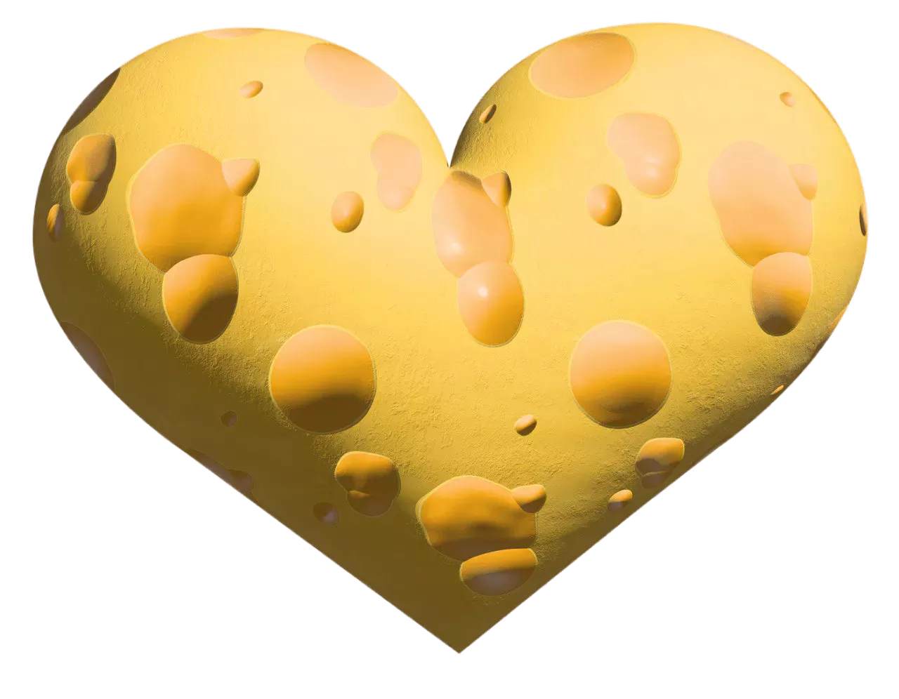

Сыроварня Любимая
Главная
О нас
Продукция
Контакты
Корзина
Вход
×
Главная
О нас
Продукция
Контакты
Корзина
Вход
404
Упс — такой страницы не существует или она была перемещена.
Вернуться на главную
Перейти в продукцию
Связаться с нами
Можешь проверить адрес в адресной строке — возможно в нём опечатка. Если думаешь, что это ошибка — напиши нам через «Контакты».